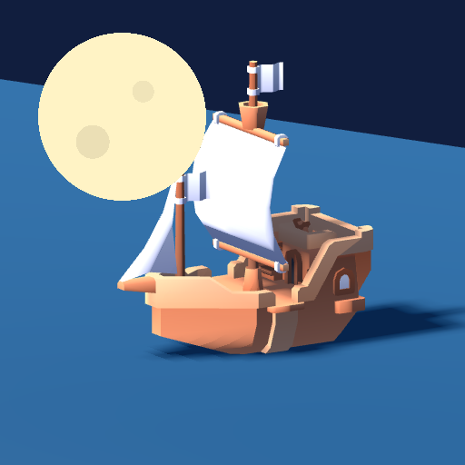

<- all projects

Moon Pull
PC
Volume
Live
Be the Moon. Raise the tide, clear the reefs and guide the fishing fleet home.
Saltmarrow's lighthouse has gone dark, and Keeper Ida and her new apprentice Nell need a little help from above. You are the Moon: pull the water up over the reefs, lower it under stone arches and bring every fishing boat home before dawn. Moon phases, clouds, fog and currents change the tide, and rowboats, fishing ships and a mysterious ghost vessel each need different clearances. Drop anchor to adjust the fleet's timing. 112 campaign nights across four lunar months, plus 16 storm challenges, let you earn fish and restore the lighthouse, docks and market.